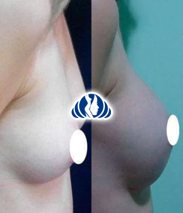

Procedimientos
Mentoplastia caso 1
Rellenos con acido hialuronico surcos profundos Caso 2
Blefaroplastia Caso 6 eliminación de bolsas
Blefaroplastia Caso 5
Rejuvenecimiento Facial Caso 3
Blefaroplastia Caso 4

Aumento de mamas con implantes Caso 4
Toxina botulínica Caso 3